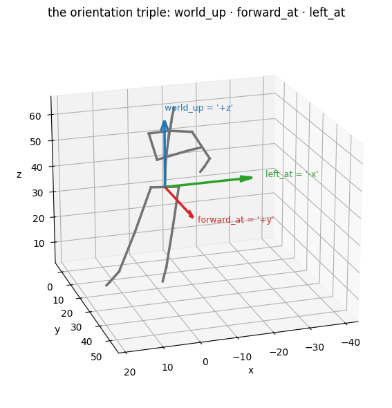

World Up and Orientation¶
What is world_up?¶
BVH files don't declare which axis is "up". Different software uses different conventions. Y-up is standard in game engines and Maya. Z-up is standard in Blender and CAD tools. pybvh needs to know the up axis for:
- Visualization -- camera orientation, bounding box projection
- Foot contact detection -- which direction is "ground"
rotate_vertical()-- which axis to rotate aroundroot_trajectory()-- projecting the root path onto the ground plane
Two frames: the skeleton's and the world's¶
A BVH file says which way is up in two places:
- The rest pose: the skeleton with every rotation zero, written in the file's coordinates.
- The motion, which places that skeleton in the world frame by frame.
pybvh reads each orientation fact from one of the two. It never combines an axis of one with an axis of the other:
| Frame | Read from | Facts |
|---|---|---|
| The skeleton's own frame | the rest pose alone, never world_up or the motion |
rest_up, rest left, rest_forward |
| The world frame | the motion, against world_up |
world_up, the facing (forward_at, left_at, facing_frame), the heading (root_trajectory) |
The rest pose's coordinates are not world coordinates. Only the root rotation of a frame says how the skeleton stands in the world at that frame. It is the one thing that carries a skeleton fact into the world: the heading is the root rotation applied to rest_forward. On a clean file, the two frames agree: rest up is world up. Then the distinction changes no value. On a file whose rest pose is authored in another convention than its motion, the distinction changes values. The bundled bvh_test3.bvh animates z-up, with a rest pose authored y-up:
b3 = pybvh.read_bvh_file("bvh_data/bvh_test3.bvh") # warns: rest pose and first frame disagree
b3.world_up # '+z' — read from the motion
b3.rest_up # '+y' — the rest pose was authored y-up
b3.rest_forward # '+z' — the rest pose's own facing: its left '+x' × its up '+y'
b3.forward_at(0) # '+y' — where the body faces in the world at frame 0
Here rest_forward lies along world up, and that is correct. It is a direction in the skeleton's frame. The root rotation turns it onto the ground on every frame.
Auto-detection¶
When a clip is read from a file or built from arrays, Bvh.__init__ guesses world_up from frame 0. The guess is the direction from the root to the head, snapped to its main axis when its largest component is at least twice the second. The head is the first joint whose name holds head as a word, else neck, chest or spine. rest_up reads the same joint.
Frame 0 cannot decide when there is no such joint, no frames, or a crouched, lying or leaning first pose. Then the skeleton's own up, rest_up, stands in. That guess assumes that the rest pose is authored upright. If the root's rotation at frame 0 carries rest_up onto another axis, pybvh warns that the rest pose may be authored in another convention. It keeps the guess (next section). When the rest pose is degenerate too, pybvh warns and falls back to '+y'.
The result is a signed axis string like '+y' or '+z'. bvh.orientation_report.world_up_source says which of the three gave it: "first_frame", "rest_up" or "default". See The orientation report.
The disagreement warnings¶
Some BVH files author the rest pose in one convention and animate in another. For example, a Blender export where the rest pose skeleton points along Y but the animation plays in Z-up world space. pybvh cannot always tell such a file from one whose first frame is not upright. So it keeps its guess, and it warns in two cases. Each warning is a UserWarning, raised once per guess (at load, for a clip read from a file). The clips derived from a clip inherit its axis (next section), and they do not warn again.
- The first frame and the rest pose name different axes. pybvh trusts the animation data (frame 0) over the rest pose. Either the rest pose is authored in another convention, and frame 0 is right, or the first frame is not upright (the performer lies, kneels or bows at the start), and the rest pose's axis may be.
- The first frame cannot decide, and the root contradicts the rest pose.
rest_upstands in. But the root's rotation at frame 0 carries it onto another axis, snapped the same way as frame 0's head direction. The rest pose may then be authored in another convention, and world up may be that other axis.
warn_on_world_up_disagreement=False at load silences both. Without the warnings, the report says the same. A pipeline that loads many clips can mark for a check every clip where one of these holds:
- Its
orientation_report.world_upnames another axis letter than itsrest_up. - Its
world_up_sourceis"rest_up".
The maintainer's corpus has 23,020 clips. Their rest poses and motion share their convention, except on bvh_test3.bvh. In this corpus, the first warning fires on 75 clips. The true up could be confirmed on 69 of them. On 68 of those 69, the first frame is not upright, and the guess is wrong. The 69th is bvh_test3.bvh, where the guess is right.
On an older export of one of its datasets, the rest poses are authored +y for a +z motion. There, the first warning fires on almost every clip. The second warning catches 31 of the 38 clips that the rest-up fallback guesses wrong.
Some clips lie flat for their whole recording. No guess from the head or the root finds their up. Only setting world_up does. If you see a warning, check whether world_up matches your expectation. Override it if needed.
Set, inferred or inherited¶
A clip's world up is in one of three states:
- Set: you assigned it (
bvh.world_up = '+y'), passedworld_up=at load, or the clip is the result ofreorient_world_up. It stays until you assign another axis. - Inferred: guessed from the clip's own first frame, as above. A clip read from a file, or built with
Bvh(...),Bvh.from_dfordf_to_bvh, starts here. - Inherited: a clip pybvh derives from another reports its source's axis without guessing from its own frames. That covers
copy(), slicing (bvh[a:b]),a + banda += b(froma),resample, every transform (mirror,scale,rotate_vertical,translate_root, the noise functions, the reorientations),retarget,change_euler_order,extract_jointsand a clip loaded from a pickle. A set axis travels the same way: the derived clip has it set too.
Cutting, resampling or transforming a clip does not change which way gravity points. But a fresh guess on the derived clip could change it. A slice whose first frame is a crouch, a fall or a lying pose is ambiguous on its own and would fall back to the rest pose, where its source was not. Inheriting the answer makes every derived clip agree with its source. It also makes the guess on the source the only one.
bvh = pybvh.read_bvh_file("walk.bvh") # inferred from frame 0: '+z'
clip = bvh[200:260] # inherited: '+z', whatever frame 200 shows
clip.orientation_report.world_up_inherited # True; world_up_source is the source's, 'first_frame'
clip.world_up_inferred # what a guess from clip's own frames would give
The report tells the three states apart:
world_up_sourceis"set"for a set axis. Otherwise it names what the guess was read from.world_up_inheritedisTruefor a guess made on the clip this one was derived from.
world_up_inferred always runs the heuristic on the clip's own motion. It changes nothing. To have a derived clip use its own guess instead, assign it: clip.world_up = clip.world_up_inferred. The axis is then set.
When the guess starts again¶
The guess starts again when the recording itself is replaced:
- When you assign
root_pos,joint_anglesor frames (bvh[i] = other). - When you load new motion with
from_rotmat,from_6d,from_quatorfrom_axisangle.
The clip then guesses again from its new first frame, whether its axis was inferred or inherited. The clips derived from it afterwards inherit the new guess. None of these clears a set axis.
For a guess that the clip made itself, the guess also starts again when you set lr_mapping. On a rig with no head, neck, chest or spine joint, the guess falls back to rest_up. On such a rig, rest_up is read from the legs of the mapping. So the clip guesses again, and it gets the axis that it would get if the same mapping had been passed at load. floor_height is measured again along that axis. A guess from the first frame comes out the same, and it does not warn again. An inherited guess stays, as does a set axis.
Manual override¶
The setter validates its input. It accepts only {+x, -x, +y, -y, +z, -z}. Anything else raises ValueError.
The override is a set axis. So it propagates to every clip derived from this one, retarget() included, because new bone lengths do not change which way is up. To clear the override and return to the guessed axis, inferred or inherited, assign "auto" (or None). A pickle keeps the override. But BVH files have no world-up field, so a write/read round trip loses a manual override. You must apply it again.
The orientation report¶
world_up, rest_up and rest_forward always answer, with a default if need be. So their value alone cannot say whether it was measured. bvh.orientation_report can say it. It returns a frozen OrientationReport, which holds each clip-level orientation fact beside how it was obtained.
report = b3.orientation_report
# OrientationReport(rest_up='+y', rest_up_source='named_joint', rest_left='+x',
# rest_forward='+z', rest_forward_source='lr_geometry',
# world_up='+z', world_up_source='first_frame',
# world_up_inherited=False, lr_mapping_source='names')
| Field | Values | Says |
|---|---|---|
rest_up_source |
"named_joint", "leg_pair", "largest_spread", None |
rest up read from a joint named for the head, neck, chest or spine; else opposite the legs, the L/R pair split across the pelvis's branches; else from the axis along which the rest pose spreads most; None when the rest pose carries no direction |
rest_left |
a signed axis or None |
the skeleton's own left (next sections) |
rest_forward_source |
"lr_geometry", "default" |
rest forward measured as rest left × rest up, or the house default for a rest pose without usable L/R geometry |
world_up_source |
"set", "first_frame", "rest_up", "default" |
world up set by you, guessed from frame 0, guessed from rest up because frame 0 could not decide, or the house '+y' |
world_up_inherited |
bool |
the guess was made on the clip this one was derived from |
lr_mapping_source |
"set", "names", None |
the L/R mapping set by you, detected from joint names, or absent |
Reading the sources is how a pipeline tells a measurement from a default without parsing warnings:
report = bvh.orientation_report
if report.world_up_source in ("rest_up", "default"):
... # frame 0 could not decide world up: check it, or set it
if report.rest_forward_source == "default":
... # no usable L/R geometry: rest_forward and the heading are a house default
Reading the report never warns. A warning about a default fires when the defaulted fact itself is read: world_up (once per guess), rest_forward, or the facing. The warning points to the report.
The report is computed once. It is kept until one of these happens:
- The skeleton changes.
world_uporlr_mappingis assigned.- The motion is assigned.
Facts that change from frame to frame are not in the report. forward_at, left_at and facing_frame carry them. facing_frame().valid marks the frames whose facing could not be measured.
forward_at(frame)¶
forward_at(frame) returns the character's world-space facing direction at a given frame, as a signed axis string:
bvh.forward_at(0) # '-z' (facing direction at frame 0)
bvh.forward_at(60) # '+x' (character has turned by frame 60)
The direction is derived from actual joint positions. pybvh averages the L/R joint pairs in world space to find the leftward direction, measured against world_up. Forward is that leftward crossed with world_up. This tracks the character's real facing as they rotate through the animation, not the rest pose.
bvhplot's camera auto-orientation and follow mode use it internally.
forward_at() reads the L/R pair list from bvh.lr_mapping. If your skeleton's joint names don't follow the expected conventions (Left*/Right*, .L/.R, _l/_r, mixamorig: namespace, .001 numbered duplicates), bvh.lr_mapping will be None, and orientation_report.lr_mapping_source is None. Then forward_at() falls back to a house default, with a warning. The house default is an arbitrary-but-stable horizontal axis for world_up. To get a meaningful forward, set the mapping explicitly. The Augmentation guide gives the override patterns.
left_at(frame)¶
left_at(frame) returns the character's world-space leftward direction at a given frame, as a signed axis string:
Together with world_up and forward_at(frame), left_at(frame) completes the character's local frame as an orthonormal right-hand-rule triple:
A positive step along left_at moves from the character's right side toward their left (right-shoulder → left-shoulder direction). This matches the standard rigging convention used in Blender, Maya, and Unity.
The triple drawn on a pose:

left_at() shares the L/R pair machinery with forward_at(), so the same bvh.lr_mapping caveats apply. The two always form a right-handed triple with world_up, on every frame: left_at never returns world up.
coords= (skip per-call FK)¶
Both forward_at() and left_at() accept a pre-computed (F, N, 3) spatial-coordinates array via coords= to skip the per-call forward kinematics. This is useful when you need orientation axes across many frames:
coords = bvh.node_positions() # one FK pass
forwards = [bvh.forward_at(f, coords=coords) for f in range(bvh.frame_count)]
lefts = [bvh.left_at(f, coords=coords) for f in range(bvh.frame_count)]
coords holds the clip's frames, one row per frame. A frame whose leftward cannot be read falls back to the root's heading at that frame (next section).
facing_frame() — the continuous basis¶
forward_at() / left_at() snap the facing direction to the nearest of the six signed world axes. That is useful for canonicalization checks, but it is lossy: through a gentle turn, the label stays constant while the true facing rotates.
bvh.facing_frame() returns the same construction before the snap, as a FacingFrame(forward, left, up, valid) named tuple. It holds:
- Three
(F, 3)unit-vector arrays: a per-frame orthonormal right-handed basis (forward × left = up). - A
(F,)bool array that isFalseon frames whose basis is a fallback rather than a measurement.
frame = bvh.facing_frame() # or bvh.facing_frame(coords=coords), one row per clip frame
frame.forward[120] # continuous facing vector at frame 120
frame.valid[120] # False if that vector is a fallback
This is a yaw-only, gravity-aligned facing frame. up is always exactly world_up, so the basis only rotates about the vertical. It is deliberately not a pelvis orientation (no roll/pitch). It is also distinct from root_trajectory()'s heading. The heading is a second facing estimate, built differently: the root bone's rotation applied to the rest forward. The heading inherits pelvis twist, and it is not a direction of travel. See analysis.facing_frame for the full policy.
When a frame's facing cannot be measured¶
One chain gives every frame its leftward, measured against world_up. The facing is built from it:
- The frame's own leftward, from its L/R pairs.
- Where that cannot be read, the root's heading at that frame, turned a quarter turn about up, when
rest_forwardis measured and the heading can be read. The leftward cannot be read when the L/R pairs line up with world up: the body lies on its side. - Otherwise, the house default: an arbitrary-but-stable horizontal axis for
world_up.
Forward is always left × up. So the basis is right-handed with world up on every frame, fallback frames included. valid is False on the frames of steps 2 and 3. A frame that falls to the house default warns, and the warning names the frame. On a skeleton with no L/R pairs at all, every frame does, and the warning names the skeleton.
Rest-pose axes: rest_up, rest left and rest_forward¶
world_up and forward_at(frame) are read from the motion. rest_up, rest left and rest_forward are the skeleton's own frame. They are read from the rest pose alone, never from world_up or the animation:
bvh.rest_up # '+y' — the skeleton's own up
bvh.orientation_report.rest_left # '+x' — the skeleton's own left
bvh.rest_forward # '+z' — the direction the rest pose faces: rest left × rest up
-
rest_upis the main axis from the root to the first joint whose name holdsheadas a word, elseneck,chestorspine. The name matches in any case, and after afoo:namespace or a.001suffix.Head,mixamorig:Head,Bip01 Head,CC_Base_HeadandJ_Bip_C_Headare heads.Foreheadis not.Without such a joint,
rest_upis the axis opposite the legs. The legs are the first L/R pair whose two joints lie in two different branches of the pelvis. The pelvis is the first node down from the root with more than one child: the root itself on a usual rig, or aHipsbelow aRoot. The axis is read from the pelvis to the far ends of those two branches, the feet. A mapping of the arms alone, both below the spine, names no legs.Without such a pair either,
rest_upis the axis along which the rest pose spreads most. This is a weak reading. A T-pose wider than tall spreads most along its arms. And hips mid-body put as much of the body below the root as above.rest_up_sourcesays which ("named_joint","leg_pair","largest_spread"). -
Rest left averages the left-minus-right rest positions of the L/R pairs. Then it removes the
rest_upcomponent. It snaps what remains to an axis.mirrorreflects along it. It is in the report only. -
rest_forwardis rest left × rest up. Without usable L/R geometry (no pairs, or pairs that lie along rest up), it is the house default for rest up ('+y'gives'+z','+z'gives'+x','+x'gives'+y'). Then reading it warns.has_lr_geometryisFalse, andrest_forward_sourceis"default".
On a clean BVH file, rest_up == world_up and rest_forward matches forward_at(0) when the root rotation at frame 0 is identity. When they disagree:
rest_up != world_up: the file was authored with the rest pose in one up convention and animated in another. This is the case that triggers the disagreement warning. Fix it withreorient_rest_up.rest_forwardis then a direction in the rest pose's convention, and it may lie along world up, as onbvh_test3.bvhabove.rest_forward != forward_at(0): the character simply starts the animation facing a different direction from their rest pose. This is normal.forward_at(0)is what the viewer sees.
All three are read-only. To actually change rest_up or rest_forward, call the corresponding reorient_* method (see "Reorienting data" below). It rotates the rest-pose offsets. It compensates the joint rotations, so FK positions are unchanged.
The heading¶
root_trajectory() reports the root's heading as a (sin, cos) pair. The heading is the root rotation of each frame applied to rest_forward, projected on the ground plane of world_up. The root rotation is what carries the skeleton's own forward into the world. So the heading follows the body, whichever convention the rest pose was authored in. On bvh_test3.bvh, it lies a median 2.3° from the measured facing (facing_frame().forward).
On a frame where the root's forward stands along world up, its projection on the ground is too short to have a direction. There the heading is NaN, not an arbitrary angle:
import numpy as np
from pybvh import rotations
bvh = pybvh.read_bvh_file("bvh_data/bvh_test1.bvh") # world up '+z', rest forward '+y'
bvh.world_up = "+z" # set it: assigning the motion below would guess world up again, from the tilted frame
tilt = np.array([[1.0, 0, 0], [0, 0, -1], [0, 1, 0]]) # turns '+y' onto '+z'
angles = bvh.joint_angles.copy()
angles[:, 0] = rotations.rotmat_to_euler(
np.broadcast_to(tilt, (bvh.frame_count, 3, 3)), bvh.nodes[0].rot_channels)
bvh.joint_angles = angles
bvh.root_trajectory()[:3, 2:4] # NaN: the root faces straight up
When rest_forward is the house default (no usable L/R geometry, and reading it warns), root_trajectory() still builds the heading on it. Then both the heading and its rate of turn (heading_vel) depend on that guessed reference whenever the root pitches or rolls. A tilted root's forward projects on the ground at an angle, and turns there at a rate, that differ with the forward it starts from. On a defaulted rest_forward, the heading and heading_vel are reliable only for a root that turns about world up alone. The facing chain takes no heading from such a rest_forward (step 2 above). So a facing never offers a guessed direction as a measured one.
With include_velocities=True, the NaN reaches only the heading_vel samples whose stencil reads that frame. With the default central stencil, these are the frames either side. Code that feeds the columns to a model or a sum masks every row that holds a NaN in any column, or fills those rows. The mask is np.isnan(traj).any(axis=1), over every column, because a heading velocity next to an unreadable heading is NaN while its own heading is not. For a facing that is never NaN, read facing_frame(). Its valid flags its fallback frames.
mirror works in the skeleton's frame¶
mirror reflects the skeleton's offsets across its own sagittal plane, along rest left. The motion follows by the same reflection. mirror never reads world_up. So the result is a valid mirror whatever world up says, a wrong guess included. To choose the axis yourself, pass lateral='x' (or 'y', 'z').
Negative up axes¶
'-y' means "more negative Y = higher". This is uncommon but valid. It affects:
rotate_vertical()-- angle direction is invertedfoot_contacts()-- ground is at the positive end of the axis- Camera orientation -- flipped vertical in visualization
All of these handle the sign correctly.
Reorienting data¶
The world_up setter only changes metadata. To actually rewrite the data so a file uses a different coordinate system or rest-pose orientation:
# Change the world coordinate system (Z-up -> Y-up)
bvh_y = bvh.reorient_world_up('+y') # character looks identical, coords change
# Fix a rest-pose / animation disagreement
bvh_fixed = bvh.reorient_rest_up('+y') # FK positions unchanged, rest pose rotated
# Change the rest-pose forward direction
bvh_fwd = bvh.reorient_rest_forward('+z') # FK positions unchanged
reorient_rest_forward turns the rest pose about rest_up, in the skeleton's own frame. Afterwards, rest_up is the same. rest_forward is the target. The target is named in the rest pose's frame, and it must not be parallel to rest_up. All three are restricted to axis-aligned rotations (multiples of 90 degrees), for lossless transformation.
Quick reference¶
# Load with explicit world_up (skips auto-detection and warning)
bvh = pybvh.read_bvh_file("walk.bvh", world_up="+y")
# Or auto-detect (default)
bvh = pybvh.read_bvh_file("walk.bvh")
bvh.world_up # '+z' (auto-detected)
bvh.forward_at(0) # '-z' (facing direction at frame 0)
bvh.world_up = '+y' # manual metadata override
# How each orientation fact was obtained
bvh.orientation_report.world_up_source # 'set', 'first_frame', 'rest_up' or 'default'
bvh.orientation_report.rest_forward_source # 'lr_geometry' or 'default'
# Suppress disagreement warning for bulk processing
clips = pybvh.read_bvh_directory("dataset/", warn_on_world_up_disagreement=False)
See also
Core Concepts — the index spaces and centered modes this page's conventions feed into · Transforms API — the reorientation functions at array level · Gallery — the orientation triple and reorientation drawn (section 2)